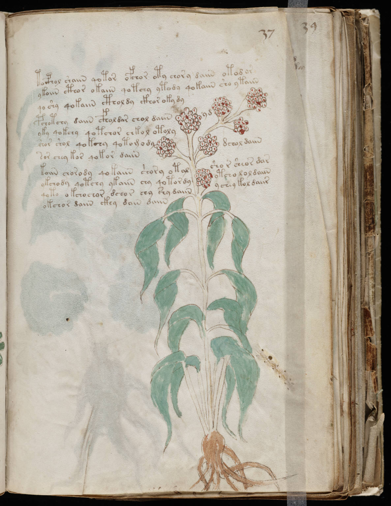

f37r
1tocphol shaiin qotor ofchor oty chory daiin otod or2ykoiin cthor okaiin qotchy ytody qokaiin sho ytaiin3qoshy qokaiin cthol dy ckhor oky dy4pchotchy daiin cfhol dar chol daiinyd5yky qokchy qotchor chkol otoly6shor shol qokchy qotomodydchol daiin7sor chey kor qokor daiin8koiin chorody qokaiin shory otalshor sheor dar9ykchody qotchy ykaiin chy qotor dyotcho lol daiin10qoto okchochor dchor chy daiinychey kol daiir11okchor daiin ckhy dain diiiin
